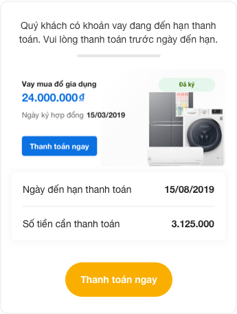
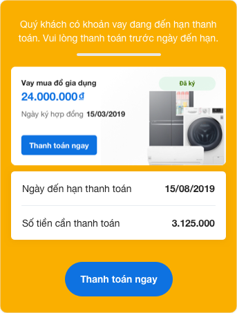
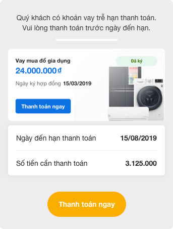
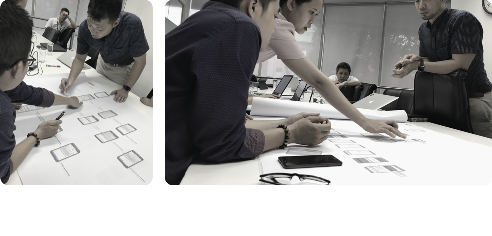
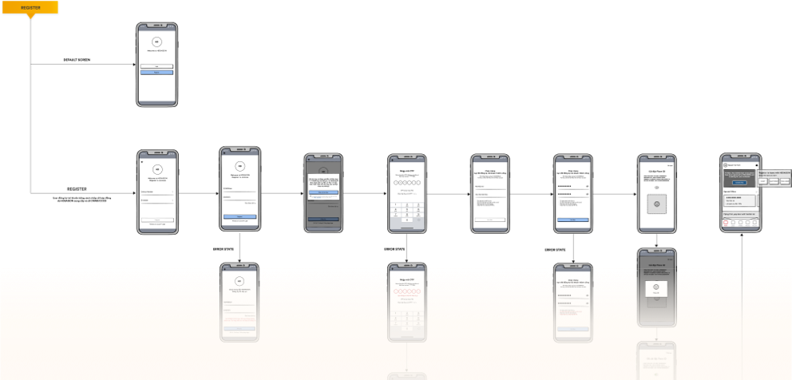
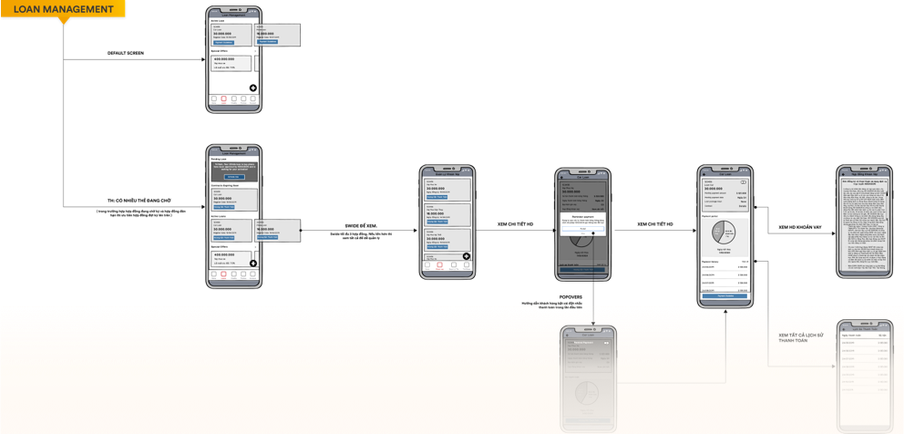
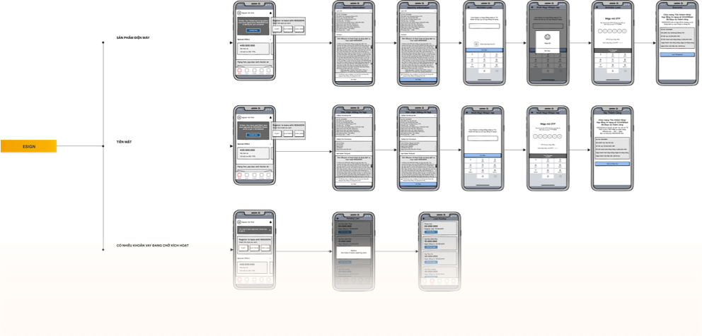

Overview
HD Saison started 100% of its loans in a branch or at a dealer counter, the only lender among its four closest competitors with no digital path at all, in a market growing 23.7% a year public.
I reframed the client's four-feature brief around one goal, getting new loans off the counter, and sequenced eSign and self-serve loan management ahead of the remarketing features the client had ranked equally.
The app shipped in May 2022 and is still live; eSign is in HD Saison's production flow today. Approval time was targeted from 3–5 hours down to 2 target. I did not own the post-launch measurement.
Discovery
HD Saison is a joint venture between HDBank and Credit Saison, licensed in 2007 as Vietnam's first consumer finance company. At project start it served over 6 million customers across more than 16,000 service points as of Dec 2021, nearly all of them a counter inside an electronics shop or a motorbike showroom. The brief listed four goals of equal weight: eSign, loan management, payment and remarketing. Discovery was about finding out whether they really were equal.
User insight
Mapping the four-stage borrowing journey surfaced two costs customers absorbed and the company never saw: 3–5 hours end to end and eight separate signatures client-reported.
Data insight
The company's own funnel showed returning customers declining, and the information collected when a loan was written sat unused for any later offer. Every loan started from zero, even for someone on their third motorbike.
Business insight
HD Saison was third by market share and second-to-last by web traffic, with the only fully offline path in the group. Its motorbike-loan share was the market's highest, 41% in 2022 public.
Neither of those user costs is a complaint anyone would file. Customers accepted them as how borrowing works. They show up instead as people walking away from the counter and as a falling repeat-borrow rate, which is where the business finally noticed. The dealer counter was the company's biggest asset and its only channel: one channel carrying the entire growth story.

Competitor benchmark — the five highest-traffic lenders in the segment
| Lender | Loans written offline | Max loan | Monthly web visits estimated |
|---|---|---|---|
| Home Credit | 82% | 200M VND | 431K |
| FE Credit | 78% | 70M VND | 1.07M |
| HD Saison | 100% — no digital path | 100M VND | 116K |
| EasyCredit | 86% | 100M VND | 62K |
| JACCS | 66% | 80M VND | 38K |
For market context: 16 consumer finance companies are licensed by the State Bank of Vietnam. Consumer finance, banks and finance companies combined, reached VND 2,912tn in 2021, up 23.7% year on year, on a five-year CAGR of 15.1%. Population roughly 98.5 million public.
Visitor figures are almost certainly SimilarWeb monthly web visits, but v1 never stated the source or the month, and two-decimal precision on an estimated metric invites exactly the question you don't want. Confirm the tool and month, or they stay rounded and tagged as above.
The four questions, answered in writing
- Who and what problem? Motorbike, electronics and cash borrowers, often first-time formal credit users, who must visit a dealer or branch and sign eight times to borrow — then have no way to check or pay a loan without going back.
- Why now? The market grew 23.7% in 2021 on a 15.1% five-year CAGR, and every direct competitor already had a digital path. The cost of waiting was structural, not incremental.
- What outcome would tell us it worked? Approval time from 3–5 hours to 2 hours target, and a non-zero share of applications started without a branch visit. The second is the number I'd fight to have instrumented if I ran this again.
- Is it feasible? Yes, gated on one dependency: a legally valid e-signature. OTP-based signing was the constraint the entire sequence hung on.
The decision: one problem, not four features
The client's four goals were not four problems. eSign, loan management and payment all depend on the same constraint, that nothing can start without a branch visit, and remarketing depends on all three. Treating them as a flat list was the thing to fix first.
Options on the table
A — All four in parallel. Buys client satisfaction, ships
four half-features.
B — Servicing first. Loan management and payment for
existing borrowers. Lower risk, no legal dependency, and it leaves the actual
problem untouched.
C — New loans first. eSign as the unlock, then self-serve
servicing, remarketing deferred. Highest legal risk, and the only option that
moves the 100%.
Criteria I judged on
Does it move the offline figure? Is OTP signing legally feasible here? Does the dealer network survive it? And what can an existing borrower do without visiting?
What I chose
Option C. eSign came first because nothing else works without it: you cannot remove a branch visit that exists to collect eight wet signatures. Four competitors had already proven the approach was viable in this market and this regulatory regime.
What I killed
Remarketing and promotional targeting, one of the client's four equal goals. Also cut: loan comparison and eligibility pre-check, which added a decision step to a process whose problem was too many steps.
My argument against remarketing was simple. Marketing to a customer base you can only reach in a branch is spending acquisition budget on a channel you haven't built yet. HD Saison's channel strength meant it had more to lose than anyone from staying single-channel.
Confirm this decision narrative. It is reconstructed from what v1 showed: four client goals stated, remarketing designed but never featured, eSign sequenced first. If the real call was made differently, this is the load-bearing section and must be corrected before anything else.
Solution design
Four screens carry the decision.
eSign
Eight wet signatures collapse to one OTP-authenticated confirmation. The only feature whose absence would have invalidated the rest of the roadmap.
Home
Loans awaiting signature take the top slot unconditionally, the one state where the user is blocking their own money. Offers sit below. This ordering was contested.
Loan management
Details, amount due, payment history, and payment initiated in place rather than as a separate journey. The screen that turns a one-off borrower into a repeat one without a branch visit.
Reminder ladder
Four states: four days out, two days, one day, overdue. Graduated rather than a single alert, because borrowers weren't ignoring due dates. They were losing track of them.


The home-screen ordering is worth defending: the commercial argument for putting promotions on top is obvious, and it loses to the fact that an unsigned loan is revenue already earned and not yet booked. Loan categories — cash, electronics, motorbike, tickets — mirror the existing dealer taxonomy rather than introducing an app-native one, so a customer who has borrowed at a counter recognises the product they already know.




From wireframe to interface




Validation. An interactive prototype was built in Marvel (Sep 2021) and walked through with stakeholders and target users before build. Open the prototype →
Name the validation method precisely: moderated testing with target users, or expert review with the client team? The framework wants the method named, and the true answer is better than the impressive one.
Delivery
Unfilled, and this is the section most candidates have nothing for — which makes having something disproportionately valuable. Prompts: what did legal or compliance push back on between eSign spec and launch? The app went live May 2022, roughly eight months after the Sep 2021 prototype: what consumed those months, core banking integration, KYC, credit decisioning? What got cut for v1? The App Store description says loans are capped at 6–12 month terms with no in-app income verification — scope, risk, or regulatory decision?
Learning and follow-up
Shipped, not measured by me. The app went live on the App Store in May 2022 and has shipped continuously since, v1.1.30 as of May 2026, ranked #36 in Finance in Vietnam public. eSign is in HD Saison's production flow today: after approval, the customer signs in the app. The self-serve surface argued for in discovery now extends to the public site, which carries online application, a repayment calculator and loan lookup.
The two-hour target was set in discovery. I moved on before the measurement cycle and never saw the post-launch number. What I would have tracked, in priority order: the share of applications started without a branch visit, which is what the whole thesis rests on; then median approval time against the target, eSign completion versus drop-off at the signing step, and repeat-borrow rate for app users against counter-only customers.
The company has since grown from 6M customers across 16,000 service points to 15M across 26,500 public. I claim none of that. Four years of growth has many authors, and all I can say is that the product I worked on is still running inside it.
One number I have to sit with: the app holds 3.0 ★ from about 2,500 ratings. That is not a good score, and it is the number an interviewer will find.
Who owned measurement after handoff? One name or one team turns "not measured by me" from a gap into a professional handover.
What I'd do differently
The competitor benchmark reframed the entire brief, and it took days rather than weeks. I ran it after working the client's four stated goals as a flat list for the first stretch of the project. It should have been week one, before I accepted the goal structure I was handed.
I defined the outcome metric as approval time, a process measure the client already believed in. The measure that actually tested my thesis was the share of loans started without a branch visit, and I never got it instrumented. Choosing the metric your stakeholder is comfortable with is the quiet way a good reframe fails to survive launch.
And I treated handoff as the end of my involvement. Four years of App Store history exist for this product and I cannot tell you what happened in the first ninety days of it, which is why the most important section here is one I have to label rather than fill.